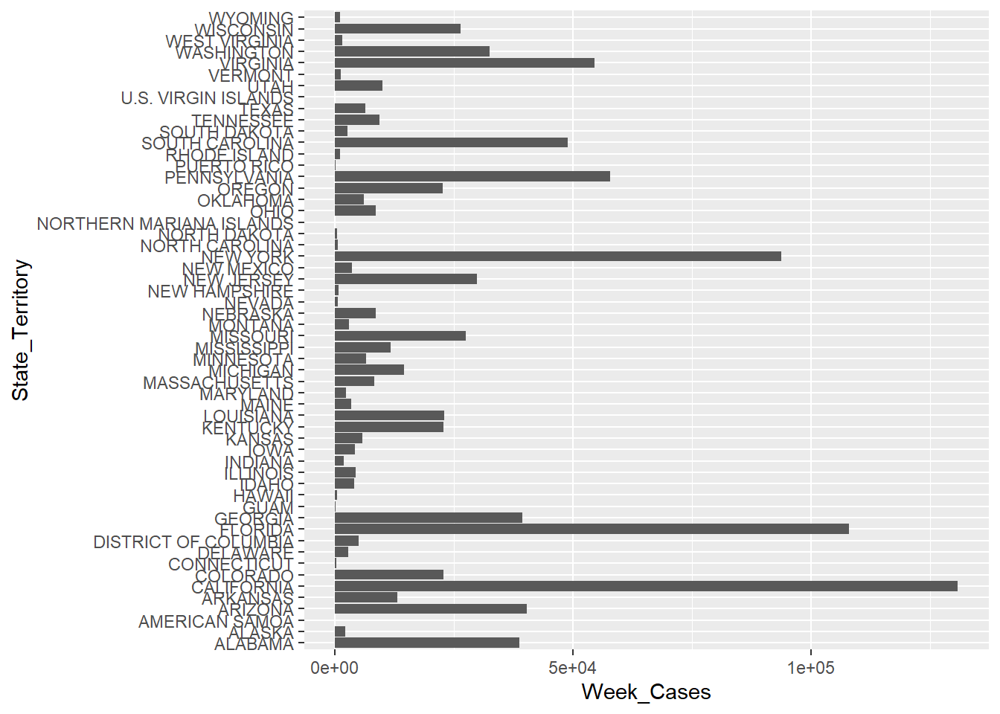

── Attaching packages ─────────────────────────────────────── tidyverse 1.3.2 ──
✔ ggplot2 3.4.0 ✔ purrr 1.0.1
✔ tibble 3.1.8 ✔ dplyr 1.0.10
✔ tidyr 1.2.1 ✔ stringr 1.5.0
✔ readr 2.1.3 ✔ forcats 0.5.2
── Conflicts ────────────────────────────────────────── tidyverse_conflicts() ──
✖ dplyr::filter() masks stats::filter()
✖ dplyr::lag() masks stats::lag()Data Analysis Exercise
Data Information
Data Source
This data was obtained from the Centers for Disease Control and Prevention (CDC)’s National Notifiable Diseases Surveillance System (NNDSS).
Data Description
Each week, the Division of Health Informatics and Surveillance at the CDC releases a weekly report describing “provisional” cases of diseases within the United States and its territories. This dataset was released on January 26, 2023 (Health Informatics and Surveillance 2023).
Data Contents
This dataset contains 424,000 rows and 16 columns.
Data Loading and Processing
Load Libraries
Load Data
NNDSS_Weekly <- read_csv("data-analysis-exercise/data/NNDSS_Weekly_Data.csv")Rows: 424130 Columns: 16
── Column specification ────────────────────────────────────────────────────────
Delimiter: ","
chr (9): Reporting Area, Label, Current week, flag, Previous 52 weeks Max, f...
dbl (7): Current MMWR Year, MMWR WEEK, Current week, Previous 52 week Max, C...
ℹ Use `spec()` to retrieve the full column specification for this data.
ℹ Specify the column types or set `show_col_types = FALSE` to quiet this message.Cleaning Data
Variables of interest include state/territory, cases this week, and disease.
# Set Cases in New York City To Be Counted as Cases in New York (State)
NNDSS_Weekly <- NNDSS_Weekly %>%
mutate(State_Territory = case_when(
LOCATION1 == "NEW YORK CITY" ~ "NEW YORK",
TRUE ~ LOCATION1))
# Rename Variables
NNDSS_Weekly <- NNDSS_Weekly %>% rename(Disease = Label) %>%
rename(Year = `Current MMWR Year`) %>% rename(Week = `MMWR WEEK`) %>% rename(Week_Cases = `Current week`)
# Remove Extra Spaces and NAs in State_Territory
NNDSS_Weekly$Disease <- sub(" ", " ", NNDSS_Weekly$Disease)
NNDSS_Weekly <- NNDSS_Weekly %>%
filter(State_Territory != "NA")
# Preliminary Graph: Cases per State
ggplot(NNDSS_Weekly, aes(y = State_Territory, x = Week_Cases)) + geom_col()Warning: Removed 324437 rows containing missing values (`position_stack()`).
Data Summary
tbl_summary(NNDSS_Weekly %>% select(Week_Cases, State_Territory, Disease, Year), by = Year)| Characteristic | 2022, N = 326,0401 | 2023, N = 19,3231 |
|---|---|---|
| Week_Cases | 3 (1, 13) | 3 (1, 12) |
| Unknown | 306,364 | 18,073 |
| State_Territory | ||
| ALABAMA | 5,720 (1.8%) | 339 (1.8%) |
| ALASKA | 5,720 (1.8%) | 339 (1.8%) |
| AMERICAN SAMOA | 5,720 (1.8%) | 339 (1.8%) |
| ARIZONA | 5,720 (1.8%) | 339 (1.8%) |
| ARKANSAS | 5,720 (1.8%) | 339 (1.8%) |
| CALIFORNIA | 5,720 (1.8%) | 339 (1.8%) |
| COLORADO | 5,720 (1.8%) | 339 (1.8%) |
| CONNECTICUT | 5,720 (1.8%) | 339 (1.8%) |
| DELAWARE | 5,720 (1.8%) | 339 (1.8%) |
| DISTRICT OF COLUMBIA | 5,720 (1.8%) | 339 (1.8%) |
| FLORIDA | 5,720 (1.8%) | 339 (1.8%) |
| GEORGIA | 5,720 (1.8%) | 339 (1.8%) |
| GUAM | 5,720 (1.8%) | 339 (1.8%) |
| HAWAII | 5,720 (1.8%) | 339 (1.8%) |
| IDAHO | 5,720 (1.8%) | 339 (1.8%) |
| ILLINOIS | 5,720 (1.8%) | 339 (1.8%) |
| INDIANA | 5,720 (1.8%) | 339 (1.8%) |
| IOWA | 5,720 (1.8%) | 339 (1.8%) |
| KANSAS | 5,720 (1.8%) | 339 (1.8%) |
| KENTUCKY | 5,720 (1.8%) | 339 (1.8%) |
| LOUISIANA | 5,720 (1.8%) | 339 (1.8%) |
| MAINE | 5,720 (1.8%) | 339 (1.8%) |
| MARYLAND | 5,720 (1.8%) | 339 (1.8%) |
| MASSACHUSETTS | 5,720 (1.8%) | 339 (1.8%) |
| MICHIGAN | 5,720 (1.8%) | 339 (1.8%) |
| MINNESOTA | 5,720 (1.8%) | 339 (1.8%) |
| MISSISSIPPI | 5,720 (1.8%) | 339 (1.8%) |
| MISSOURI | 5,720 (1.8%) | 339 (1.8%) |
| MONTANA | 5,720 (1.8%) | 339 (1.8%) |
| NEBRASKA | 5,720 (1.8%) | 339 (1.8%) |
| NEVADA | 5,720 (1.8%) | 339 (1.8%) |
| NEW HAMPSHIRE | 5,720 (1.8%) | 339 (1.8%) |
| NEW JERSEY | 5,720 (1.8%) | 339 (1.8%) |
| NEW MEXICO | 5,720 (1.8%) | 339 (1.8%) |
| NEW YORK | 11,440 (3.5%) | 678 (3.5%) |
| NORTH CAROLINA | 5,720 (1.8%) | 339 (1.8%) |
| NORTH DAKOTA | 5,720 (1.8%) | 339 (1.8%) |
| NORTHERN MARIANA ISLANDS | 5,720 (1.8%) | 339 (1.8%) |
| OHIO | 5,720 (1.8%) | 339 (1.8%) |
| OKLAHOMA | 5,720 (1.8%) | 339 (1.8%) |
| OREGON | 5,720 (1.8%) | 339 (1.8%) |
| PENNSYLVANIA | 5,720 (1.8%) | 339 (1.8%) |
| PUERTO RICO | 5,720 (1.8%) | 339 (1.8%) |
| RHODE ISLAND | 5,720 (1.8%) | 339 (1.8%) |
| SOUTH CAROLINA | 5,720 (1.8%) | 339 (1.8%) |
| SOUTH DAKOTA | 5,720 (1.8%) | 339 (1.8%) |
| TENNESSEE | 5,720 (1.8%) | 339 (1.8%) |
| TEXAS | 5,720 (1.8%) | 339 (1.8%) |
| U.S. VIRGIN ISLANDS | 5,720 (1.8%) | 339 (1.8%) |
| UTAH | 5,720 (1.8%) | 339 (1.8%) |
| VERMONT | 5,720 (1.8%) | 339 (1.8%) |
| VIRGINIA | 5,720 (1.8%) | 339 (1.8%) |
| WASHINGTON | 5,720 (1.8%) | 339 (1.8%) |
| WEST VIRGINIA | 5,720 (1.8%) | 339 (1.8%) |
| WISCONSIN | 5,720 (1.8%) | 339 (1.8%) |
| WYOMING | 5,720 (1.8%) | 339 (1.8%) |
| Disease | ||
| Anthrax | 2,964 (0.9%) | 171 (0.9%) |
| Arboviral diseases, Chikungunya virus disease | 2,964 (0.9%) | 171 (0.9%) |
| Arboviral diseases, Eastern equine encephalitis virus disease | 2,964 (0.9%) | 171 (0.9%) |
| Arboviral diseases, Jamestown Canyon virus disease | 2,964 (0.9%) | 171 (0.9%) |
| Arboviral diseases, La Crosse virus disease | 2,964 (0.9%) | 171 (0.9%) |
| Arboviral diseases, Powassan virus disease | 2,964 (0.9%) | 171 (0.9%) |
| Arboviral diseases, St. Louis encephalitis virus disease | 2,964 (0.9%) | 171 (0.9%) |
| Arboviral diseases, West Nile virus disease | 2,964 (0.9%) | 171 (0.9%) |
| Arboviral diseases, Western equine encephalitis virus disease | 2,964 (0.9%) | 171 (0.9%) |
| Babesiosis | 2,964 (0.9%) | 171 (0.9%) |
| Botulism, Foodborne | 2,964 (0.9%) | 171 (0.9%) |
| Botulism, Infant | 2,964 (0.9%) | 171 (0.9%) |
| Botulism, Other (wound & unspecified) | 2,964 (0.9%) | 171 (0.9%) |
| Brucellosis | 2,964 (0.9%) | 171 (0.9%) |
| Campylobacteriosis | 2,964 (0.9%) | 171 (0.9%) |
| Candida auris, clinical | 2,964 (0.9%) | 171 (0.9%) |
| Candida auris, screening | 0 (0%) | 171 (0.9%) |
| Carbapenemase-producing carbapenem-resistant Enterobacteriaceae | 2,964 (0.9%) | 0 (0%) |
| Carbapenemase-Producing Organisms (CPO), Total | 0 (0%) | 171 (0.9%) |
| Chancroid | 2,964 (0.9%) | 171 (0.9%) |
| Chlamydia trachomatis infection | 2,964 (0.9%) | 171 (0.9%) |
| Cholera | 2,964 (0.9%) | 171 (0.9%) |
| Coccidioidomycosis | 2,964 (0.9%) | 0 (0%) |
| Coccidioidomycosis, Confirmed | 0 (0%) | 171 (0.9%) |
| Coccidioidomycosis, Probable | 0 (0%) | 171 (0.9%) |
| Coccidioidomycosis, total | 0 (0%) | 171 (0.9%) |
| Cryptosporidiosis | 2,964 (0.9%) | 171 (0.9%) |
| Cyclosporiasis | 2,964 (0.9%) | 171 (0.9%) |
| Dengue virus infections, Dengue | 2,964 (0.9%) | 171 (0.9%) |
| Dengue virus infections, Dengue-like illness | 2,964 (0.9%) | 171 (0.9%) |
| Dengue virus infections, Severe dengue | 2,964 (0.9%) | 171 (0.9%) |
| Ehrlichiosis and Anaplasmosis, Anaplasma phagocytophilum infection | 2,964 (0.9%) | 171 (0.9%) |
| Ehrlichiosis and Anaplasmosis, Ehrlichia chaffeensis infection | 2,964 (0.9%) | 171 (0.9%) |
| Ehrlichiosis and Anaplasmosis, Ehrlichia ewingii infection | 2,964 (0.9%) | 171 (0.9%) |
| Ehrlichiosis and Anaplasmosis, Undetermined ehrlichiosis/anaplasmosis | 2,964 (0.9%) | 171 (0.9%) |
| Giardiasis | 2,964 (0.9%) | 171 (0.9%) |
| Gonorrhea | 2,964 (0.9%) | 171 (0.9%) |
| Haemophilus influenzae, invasive disease, Age <5 years, Non-b serotype | 2,964 (0.9%) | 171 (0.9%) |
| Haemophilus influenzae, invasive disease, Age <5 years, Nontypeable | 2,964 (0.9%) | 171 (0.9%) |
| Haemophilus influenzae, invasive disease, Age <5 years, Serotype b | 2,964 (0.9%) | 171 (0.9%) |
| Haemophilus influenzae, invasive disease, Age <5 years, Unknown serotype | 2,964 (0.9%) | 171 (0.9%) |
| Haemophilus influenzae, invasive disease, All ages, all serotypes | 2,964 (0.9%) | 171 (0.9%) |
| Hansen's disease | 2,964 (0.9%) | 171 (0.9%) |
| Hantavirus infection, non-hantavirus pulmonary syndrome | 2,964 (0.9%) | 171 (0.9%) |
| Hantavirus pulmonary syndrome | 2,964 (0.9%) | 171 (0.9%) |
| Hemolytic uremic syndrome post-diarrheal | 2,964 (0.9%) | 171 (0.9%) |
| Hepatitis B, perinatal infection | 2,964 (0.9%) | 171 (0.9%) |
| Hepatitis C, acute, Confirmed | 2,964 (0.9%) | 171 (0.9%) |
| Hepatitis C, acute, Probable | 2,964 (0.9%) | 171 (0.9%) |
| Hepatitis C, perinatal infection | 2,964 (0.9%) | 171 (0.9%) |
| Hepatitis, A, acute | 2,964 (0.9%) | 171 (0.9%) |
| Hepatitis, B, acute | 2,964 (0.9%) | 171 (0.9%) |
| Influenza-associated pediatric mortality | 2,964 (0.9%) | 171 (0.9%) |
| Invasive pneumococcal disease, age <5 years, Confirmed | 2,964 (0.9%) | 171 (0.9%) |
| Invasive pneumococcal disease, age <5 years, Probable | 2,964 (0.9%) | 171 (0.9%) |
| Invasive pneumococcal disease, all ages, Confirmed | 2,964 (0.9%) | 171 (0.9%) |
| Invasive pneumococcal disease, all ages, Probable | 2,964 (0.9%) | 171 (0.9%) |
| Legionellosis | 2,964 (0.9%) | 171 (0.9%) |
| Leptospirosis | 2,964 (0.9%) | 171 (0.9%) |
| Listeriosis, Confirmed | 2,964 (0.9%) | 171 (0.9%) |
| Listeriosis, Probable | 2,964 (0.9%) | 171 (0.9%) |
| Malaria | 2,964 (0.9%) | 171 (0.9%) |
| Measles, Imported | 2,964 (0.9%) | 171 (0.9%) |
| Measles, Indigenous | 2,964 (0.9%) | 171 (0.9%) |
| Melioidosis | 0 (0%) | 171 (0.9%) |
| Meningococcal disease, All serogroups | 2,964 (0.9%) | 171 (0.9%) |
| Meningococcal disease, Other serogroups | 2,964 (0.9%) | 171 (0.9%) |
| Meningococcal disease, Serogroup B | 2,964 (0.9%) | 171 (0.9%) |
| Meningococcal disease, Serogroups ACWY | 2,964 (0.9%) | 171 (0.9%) |
| Meningococcal disease, Unknown serogroup | 2,964 (0.9%) | 171 (0.9%) |
| Mumps | 2,964 (0.9%) | 171 (0.9%) |
| Novel Influenza A virus infections | 2,964 (0.9%) | 171 (0.9%) |
| Pertussis | 2,964 (0.9%) | 171 (0.9%) |
| Plague | 2,964 (0.9%) | 171 (0.9%) |
| Poliomyelitis, paralytic | 2,964 (0.9%) | 171 (0.9%) |
| Poliovirus infection, nonparalytic | 2,964 (0.9%) | 171 (0.9%) |
| Psittacosis | 2,964 (0.9%) | 171 (0.9%) |
| Q fever, Acute | 2,964 (0.9%) | 171 (0.9%) |
| Q fever, Chronic | 2,964 (0.9%) | 171 (0.9%) |
| Q fever, Total | 2,964 (0.9%) | 171 (0.9%) |
| Rabies, Animal | 2,964 (0.9%) | 0 (0%) |
| Rabies, Human | 2,964 (0.9%) | 171 (0.9%) |
| Rubella | 2,964 (0.9%) | 171 (0.9%) |
| Rubella, congenital syndrome | 2,964 (0.9%) | 171 (0.9%) |
| Salmonella Paratyphi infection | 2,964 (0.9%) | 171 (0.9%) |
| Salmonella Typhi infection | 2,964 (0.9%) | 171 (0.9%) |
| Salmonellosis (excluding Salmonella Typhi infection and Salmonella Paratyphi infection) | 2,964 (0.9%) | 171 (0.9%) |
| Severe acute respiratory syndrome-associated coronavirus disease | 2,964 (0.9%) | 171 (0.9%) |
| Shiga toxin-producing Escherichia coli (STEC) | 2,964 (0.9%) | 171 (0.9%) |
| Shigellosis | 2,964 (0.9%) | 171 (0.9%) |
| Smallpox | 2,964 (0.9%) | 171 (0.9%) |
| Streptococcal toxic shock syndrome | 2,964 (0.9%) | 171 (0.9%) |
| Syphilis, Congenital | 2,964 (0.9%) | 171 (0.9%) |
| Syphilis, Primary and secondary | 2,964 (0.9%) | 171 (0.9%) |
| Tetanus | 2,964 (0.9%) | 171 (0.9%) |
| Toxic shock syndrome (other than Streptococcal) | 2,964 (0.9%) | 171 (0.9%) |
| Trichinellosis | 2,964 (0.9%) | 171 (0.9%) |
| Tuberculosis | 2,964 (0.9%) | 171 (0.9%) |
| Tularemia | 2,964 (0.9%) | 171 (0.9%) |
| Vancomycin-intermediate Staphylococcus aureus | 2,964 (0.9%) | 171 (0.9%) |
| Vancomycin-resistant Staphylococcus aureus | 2,964 (0.9%) | 171 (0.9%) |
| Varicella morbidity | 2,964 (0.9%) | 171 (0.9%) |
| Vibriosis (any species of the family Vibrionaceae, other than toxigenic Vibrio cholerae O1 or O139), Confirmed | 2,964 (0.9%) | 171 (0.9%) |
| Vibriosis (any species of the family Vibrionaceae, other than toxigenic Vibrio cholerae O1 or O139), Probable | 2,964 (0.9%) | 171 (0.9%) |
| Viral hemorrhagic fevers, Chapare virus | 2,964 (0.9%) | 171 (0.9%) |
| Viral hemorrhagic fevers, Crimean-Congo hemorrhagic fever virus | 2,964 (0.9%) | 171 (0.9%) |
| Viral hemorrhagic fevers, Ebola virus | 2,964 (0.9%) | 171 (0.9%) |
| Viral hemorrhagic fevers, Guanarito virus | 2,964 (0.9%) | 171 (0.9%) |
| Viral hemorrhagic fevers, Junin virus | 2,964 (0.9%) | 171 (0.9%) |
| Viral hemorrhagic fevers, Lassa virus | 2,964 (0.9%) | 171 (0.9%) |
| Viral hemorrhagic fevers, Lujo virus | 2,964 (0.9%) | 171 (0.9%) |
| Viral hemorrhagic fevers, Machupo virus | 2,964 (0.9%) | 171 (0.9%) |
| Viral hemorrhagic fevers, Marburg virus | 2,964 (0.9%) | 171 (0.9%) |
| Viral hemorrhagic fevers, Sabia virus | 2,964 (0.9%) | 171 (0.9%) |
| Yellow fever | 2,964 (0.9%) | 171 (0.9%) |
| Zika virus disease, non-congenital | 2,964 (0.9%) | 171 (0.9%) |
| 1 Median (IQR); n (%) | ||
Save RDS File
saveRDS(NNDSS_Weekly, file = "data-analysis-exercise/output/clean_NNDSS.rds")References
Health Informatics, Division of, and Surveillance. 2023. “NNDSS Weekly Data | Data | Centers for Disease Control and Prevention.” https://data.cdc.gov/NNDSS/NNDSS-Weekly-Data/x9gk-5huc.